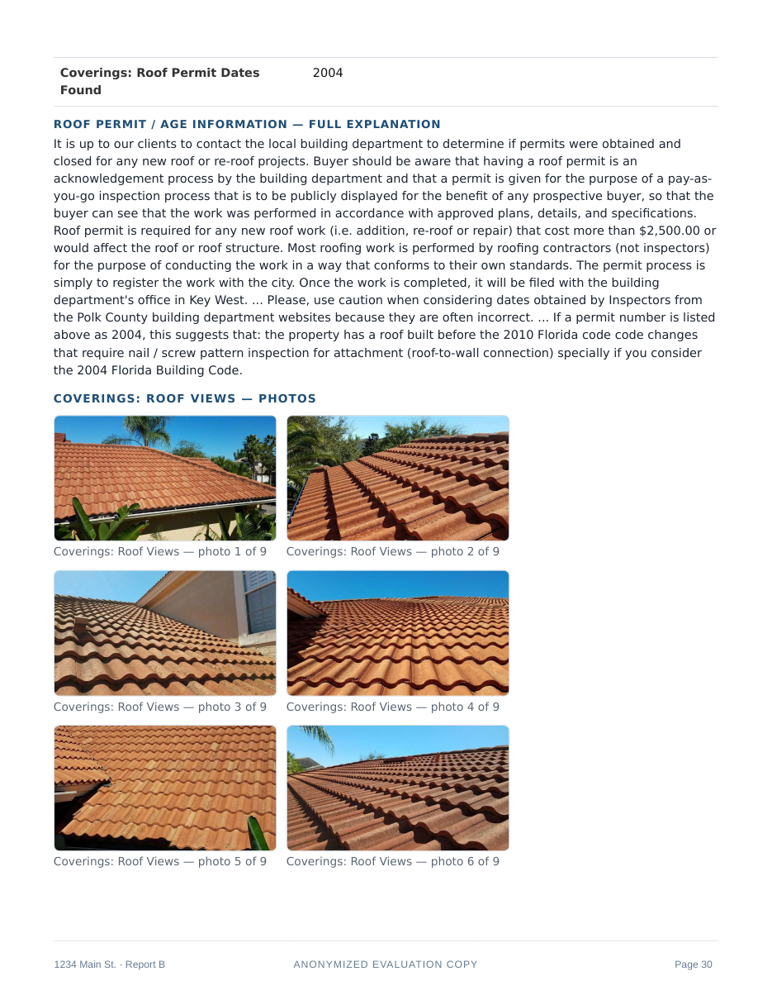

A findings page from a sample Inspyx report.

Photos at full size
Your photos are the proof behind every finding, so they are never shrunk into thumbnails of evidence. Clients see what you saw.
Clean at any finding count
Spacing that stays clean whether the report holds one finding or fifty — elements spaced apart, nothing crowded, nothing overlapping.
Built to be sent the same day
Because the report is assembled during the inspection, sending it the same day is the workflow the product is built around — not an extra evening of work at the kitchen table.
Nothing enters the report without the inspector's OK. Every item is approved by you before it enters the record.